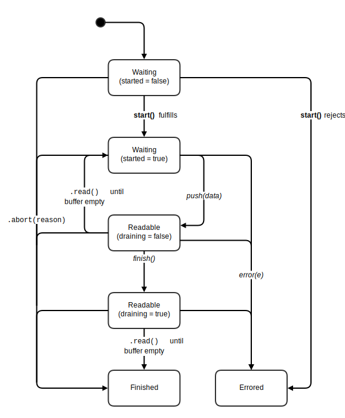

To the extent possible under law, the editor has waived all copyright and related or neighboring rights to this
work.
Table of Contents
Abstract
This specification provides APIs for creating, composing, and consuming streams of data. These streams are designed
to map efficiently to low-level I/O primitives, and allow easy composition with built-in backpressure and buffering. On
top of streams, the web platform can build higher-level abstractions, such as filesystem or socket APIs, while at the
same time users can use the supplied tools to build their own streams which integrate well with those of the web
platform.
Status
This specification is in the process of establishing itself in the WHATWG. As such, the term "Living Standard"
indicates a goal, rather than reality.
Although the core algorithms and APIs are largely present and working, prototyping and testing of them is still
underway, and there is still room for additional APIs beyond those specified here. Please join us in the
issue tracker for more discussion.
Conformance
All diagrams, examples, and notes in this specification are non-normative, as are all sections explicitly marked
non-normative. Everything else in this specification is normative.
The key words "MUST", "MUST NOT", "REQUIRED", "SHOULD", "SHOULD NOT", "RECOMMENDED",
"MAY", and "OPTIONAL" in the normative parts of this specification are to be interpreted as described in RFC2119. For
readability, these words do not appear in all uppercase letters in this specification.
RFC2119
Conformance requirements phrased as algorithms or specific steps may be implemented in any manner, so long as the end
result is equivalent.
Model
Readable Streams
A readable stream represents a source of data, from which you can read. In other words, data comes
out of a readable stream.
Although a readable stream can be created with arbitrary behavior, most readable streams wrap a lower-level I/O
source, called the underlying source. There are two types of underlying source: push sources and pull
sources.
Push sources push data at you, whether or not you are listening for it. They may also provide a mechanism
for pausing and resuming the flow of data. An example push source is a TCP socket, where data is constantly being pushed
from the OS level, at a rate that can be controlled by changing the TCP window size.
Pull sources require you to request data from them. The data may be available synchronously, e.g. if it is
held by the operating system's in-memory buffers, or asynchronously, e.g. if it has to be read from disk. An example
pull source is a file handle, where you seek to specific locations and read specific amounts.
Readable streams are designed to wrap both types of sources behind a single, unified interface.
Writable Streams
A writable stream represents a destination for data, into which you can write. In other words, data goes
in to a writable stream.
Analogously to readable streams, most writable streams wrap a lower-level I/O sink, called the underlying
sink. Writable streams work to abstract away some of the complexity of the underlying sink, by buffering
subsequent writes and only delivering them to the underlying sink one by one.
Transform Streams
A transform stream consists of a pair of streams: a writable stream input, and a readable stream output.
In a manner specific to the transform stream in question, writes to the input side result in new data being made
available for reading from the output side.
Some examples of transform streams include:
A text decoder, which takes as input bytes and produces as output strings;
A GZIP compressor, which takes as input uncompressed bytes and produces as output compressed bytes;
A video decoder, which takes as input encoded bytes and produces as output uncompressed video frames.
Pipe Chains and Backpressure
Streams are primarily used by piping them to each other. A readable stream can be piped directly to a
writable stream, or it can be piped through one or more transform streams first.
A set of streams piped together in this way is referred to as a pipe chain. In a pipe chain, the
ultimate producer is the first readable stream in the chain; the ultimate consumer is the final
writable stream in the chain.
Once a pipe chain is constructed, it can be used to propagate signals regarding how fast data should flow through
it. If any step in the chain cannot yet accept data, it propagates a signal backwards through the pipe chain, until
eventually the ultimate producer is told to stop producing data so fast. This process of normalizing data flow from the
ultimate producer according to how fast the chain can process data is called backpressure.
Readable Streams
Introduction to Readable Streams
This section is non-normative.
The readable stream API allows wrapping both pull and push sources into a single ReadableStream
abstraction. To accomplish this, the API uses the
revealing constructor pattern. The
constructor of a given stream instance is supplied with two functions, start and pull, which
each are given the parameters (push, close, error) representing capabilities tied to the internals of the
stream. By mediating all access to the internal state machine through these three functions, the stream's internal
state and bookkeeping can be kept private, allowing nobody but the original producer of the stream to insert data into
it.
This specification provides both a lower-level BaseReadableStream class, and a higher-level
ReadableStream class. ReadableStream layers on top of BaseReadableStream the
ability to customize the stream's buffering strategy, which impacts backpressure; it also supports piping the stream
to or through multiple destinations.
The following function wraps a push source, represented by a "raw socket," which triggers events for data, end,
and error, and provides the ability to pause and resume the flow of data.
function makeSocketStream(host, port, { highWaterMark = 16 * 1024 } = {}) {
const rawSocket = createRawSocketObject(host, port);
return new ReadableStream({
start(push, close, error) {
// When adapting a push source, usually most of the work happens in start.
rawSocket.ondata = chunk => {
if (!push(chunk)) {
// If push returns false, the internal buffer is full, so propagate
// the backpressure signal to the underlying source.
rawSocket.readStop();
}
};
rawSocket.onend = close;
rawSocket.onerror = error;
},
pull() {
// This is called if the internal buffer has been emptied, but the
// stream's consumer still wants more data.
rawSocket.readStart();
},
cancel() {
// If the stream is prematurely canceled, release resources.
rawSocket.readStop();
rawSocket = null;
},
strategy: new LengthBufferingStrategy({ highWaterMark })
});
}
We can then use this function to create readable streams for sockets, and pipe those streams to arbitrary writable
streams:
var socketStream = makeSocketStream("http://example.com", 80);
socketStream.pipeTo(writableStream).closed
.then(() => console.log("All data successfully written!"))
.catch(e => console.error("Something went wrong!", e));
The following function wraps a pull source, represented by a "raw file handle," which provides methods for opening,
reading from, and closing itself. These methods can call their callbacks either synchronously or asynchronously—a
Zalgo-releasing horror which we can
hide from our users by wrapping them in a readable stream.
function makeReadableFileStream(filename, { highWaterMark = 16 * 1024 } = {}) {
const fileHandle = createRawFileHandle(filename, "r");
return new ReadableStream({
start() {
return new Promise((resolve, reject) => {
fileHandle.open(err => {
if (err) {
reject(err);
}
resolve();
});
});
},
pull(push, close, error) {
// When adapting a pull source, usually most of the work happens in pull.
fileHandle.read((err, isDone, data) => {
if (err) {
// If trying to read data results in an error, report that.
error(err);
} else if (isDone) {
// If there's no more data to read, be sure to close the underlying
// source, ensuring that it succeeds before reporting success.
fileHandle.close(err => {
if (err) {
error(err);
}
close();
});
} else {
// If data was read successfully, push it into the internal buffer.
push(data);
}
});
},
cancel() {
// If the stream canceled prematurely, release resources.
fileHandle.close();
fileHandle = null;
},
strategy: new LengthBufferingStrategy({ highWaterMark })
});
}
We can then create and use readable streams for files just as we could before for sockets.
Although readable streams will usually be used by piping them to a writable stream, you can also "pump" them
directly, alternating between using the read() and wait() methods according to the current
value of the state property. For example, this function writes the contents of a readable stream to the
console as fast as they are available.
function streamToConsole(readableStream) {
pump();
function pump() {
while (readableStream.state === "readable") {
console.log(readableStream.read());
}
if (readableStream.state === "closed") {
console.log("--- all done!");
} else {
// If we're in an error state, the returned promise will be rejected with
// that error, so no need to handle "waiting" vs. "errored" separately.
readableStream.wait().then(pump, e => console.error(e));
}
}
}
The Readable Stream State Diagram
This section is non-normative.
As evidenced by the above explanations, readable streams have a fairly complex internal state machine, which is responsible for keeping track of the internal buffer, and initiating appropriate actions in response to calls to a stream's methods. This can be roughly summarized in the following diagram.

monospace
Methods of the stream
bold
Constructor parameters
italic
Capabilities given to constructor parameters
Class BaseReadableStream
Class ReadableStream
Writable Streams
Introduction to Writable Streams
This section is non-normative.
The writable stream API allows wrapping of underlying sinks into an object on which two fundamental operations can
be performed: data can be written to the stream, and the stream can be closed.
The writable stream implementation is designed to encapsulate the potential complexity of the underlying sink from
users of the stream API. In particular, users of a stream object can write data to the stream at any pace, without
regard for whether previous writes have completed or succeeded. It is the job of the stream implementation to ensure
that writes are forwarded to the underlying sink in order, and only after successful completion of previous writes.
This allows seamless use of the writable stream even in cases such as piping a fast readable file stream to a slower
writable network socket stream, which cannot acknowledge the incoming data at the same rate it becomes available.
This specification provides both a lower-level BaseWritableStream class, and a higher-level
WritableStream class. WritableStream layers on top of BaseWritableStream the
ability to customize the stream's buffering strategy, which can be communicated backward in a pipe chain to cause
backpressure.
The following function wraps an underlying sink, represented as a "raw file handle," which provides methods for
opening, writing to, and closing itself. These methods can call their callbacks either synchronously or
asynchronously—a Zalgo-releasing
horror which we can hide from our users by wrapping them in a writable stream.
function makeWritableFileStream(filename, { highWaterMark = 16 * 1024 } = {}) {
const fileHandle = createRawFileHandle(filename, "w");
return new WritableStream({
start() {
return new Promise((resolve, reject) => {
fileHandle.open(err => {
if (err) {
reject(err);
}
resolve();
});
});
},
write(data, done, error) {
fileHandle.write(data, writeErr => {
if (writeErr) {
// If trying to write results in an error, (attempt to) close the
// underlying file handle; we're not going to write any more.
fileHandle.close(closeErr => {
// If *closing* errors, pass along that error to the stream.
if (closeErr) {
error(closeErr);
}
// Otherwise, if closing succeeds, pass along the write error.
error(writeErr);
});
} else {
// If there's no error, then signal that this write completed.
done();
}
});
},
close() {
return new Promise((resolve, reject) => {
fileHandle.close(err => {
if (err) {
reject(err);
}
resolve();
});
});
},
abort() {
// If the stream aborted prematurely, release resources.
fileHandle.close();
fileHandle = null;
},
strategy: new LengthBufferingStrategy({ highWaterMark })
});
}
We can then use this function to create a writable stream for a file, and then pipe a readable stream to it:
var fileStream = makeWritableFileStream("/example/path/on/fs.txt");
readableStream.pipeTo(fileStream).closed
.then(() => console.log("All data successfully written!"))
.catch(e => console.error("Something went wrong!", e));
Note that if a particular call to fileHandle.write takes a longer time, done will be
called later. In the meantime, additional writes can be queued up, which are stored in the stream's internal buffer.
The accumulation of this buffer can move the stream into a "waiting" state, which is a signal to users
of the stream that they should back off and stop writing if possible.
Although writable streams will usually be used by piping to them from a readable stream, you can also write to them
directly. Since they buffer any incoming writes, and take care internally to forward them to the underlying sink
in sequence, you can indiscriminately write to a writable stream without much ceremony:
function writeArrayToStream(array, writableStream) {
array.forEach(chunk => writableStream.write(chunk));
return writableStream.close();
}
writeArrayToStream([1, 2, 3, 4, 5], writableStream)
.then(() => console.log("All done!"))
.catch(e => console.error("Error with the stream: " + e));
The Writable Stream State Diagram
This section is non-normative.
Class BaseWritableStream
Class WritableStream
Subclassing Streams
This section is non-normative.
Although functional by themselves for most cases, ReadableStream, WritableStream, and
others can also be subclassed to provide additional functionality. Subclasses will generally fall into one of two
camps:
Additive subclasses, adding new APIs onto the stream instances. An example would be a file stream that includes
filename or other filesystem-related properties, or a HTTP response stream that includes header-accessing
APIs.
Override subclasses, which change the behavior of the stream's methods fundamentally. An example would be a
readable TCP stream that overrides read, wait, cancel, state, and
closed to reflect and manipulate a kernel-level TCP buffer.
On an implementation level, additive subclasses will usually call super in their constructor,
initializing their base class's internal buffer and accessing it through the provided parameters to their
superconstructor. Whereas override subclasses will simply reimplement the appropriate methods directly, forgoing a call
to super and all the internal state that comes with it. They will then provide a new constructor, which
does not pass the usual capability-accessing parameters to consumers.
Because streams only interact through their public API, both types of stream subclasses can coexist. For example, you
can pipe to or from a subclassed stream of either sort, without worrying what type of implementation is under the
covers, as long as the appropriate properties and methods are provided.
Finally, note that subclassing is rarely necessary for implementing custom streams. Instead, you can simply
describe how to create a stream that wraps some underlying source or sink by describing constructor parameters that do
so, and that use the passed capabilities to forward the relevant data and state transitions to the stream's existing
representations. This approach has the advantage of alleviating you of having to manually implement many of the complex
requirements baked into the stream state machines and the contract they present to users.
Other Stream APIs
TeeStream
LengthBufferingStrategy
CountBufferingStrategy
Acknowledgments
The editor would like to thank
Bert Belder,
Marcos Caceres,
Tim Caswell,
Forbes Lindesay,
Thorsten Lorenz,
Jens Nockert,
Trevor Norris,
Dominic Tarr,
Takeshi Yoshino, and
tzik
for their contributions to this specification.
Special thanks to:
Gorgi Kosev for his breakthrough idea of separating piping into two methods, thus resolving
a major sticking point;
Forrest Norvell for his enthusiastic iteration on the reference implementation;
Isaac Schlueter for his pioneering work on JavaScript streams in Node.js; and
Jake Verbaten for his continued involvement, support, and interest in pushing this spec forward.
 To the extent possible under law, the editor has waived all copyright and related or neighboring rights to this
work.
To the extent possible under law, the editor has waived all copyright and related or neighboring rights to this
work.